install.packages(c("carData", "rpart", "rpart.plot", "tree",
"randomForest", "caret", "ggplot2"))3 Trees and Random Forests
Week 3, 16 September
Last week, we could trace each \(K\)-nearest neighbors prediction to a set of countries on a scatterplot. We begin this week with another model we can draw and explain: a decision tree. We then move to random forests, which trade some of that transparency for better predictive performance.
This comparison raises a question we will return to throughout the course. A model we can inspect is easier to explain and audit, but strong predictive performance often comes from models that are harder to interpret. Trees and forests let us examine this trade-off within one family of methods.
3.1 What trees are good at, and what they are not
Statistical trees resemble the decision trees you may already know. Before fitting one, it helps to understand their main strengths and limitations.
Benefits.
- They capture interactions and non-linear associations without requiring us to specify those patterns in advance.
- They can handle categorical variables, and individual trees are interpretable.
- They are relatively fast compared with many other machine-learning algorithms.
- They do not require the features to be rescaled.
This last point differs from \(K\)-nearest neighbors. Last week we rescaled features so that income would not dominate fertility in the distance calculation. A tree asks about one variable at a time, on its own scale, instead of calculating distances across features. Multiplying a feature by a thousand therefore changes the numerical split values but does not create the same scaling problem.
The main limitation is that a single tree often predicts poorly out of sample.
We will examine that limitation, then see how combining trees into a forest can help.
3.2 Two datasets this week
Part I uses last week’s country data. Applying a new method to familiar data makes it easier to see how the methods differ.
Part II uses Fearon and Laitin’s civil war data (Fearon and Laitin 2003). The binary outcome is rare, which introduces a different set of problems.
library(carData)
library(rpart)
library(rpart.plot)
library(tree)
library(randomForest)
library(caret)
library(ggplot2)
options(scipen = 999)
data(UN, package = "carData")
countries <- na.omit(UN[, c("ppgdp", "infantMortality", "fertility",
"pctUrban", "lifeExpF", "group")])
countries$ppgdp <- countries$ppgdp / 1000 # thousands, as last week
nrow(countries)[1] 193This dataset has one row per country. Keep that structure in mind when we move to Part II.
3.3 Part I. A regression tree
Last week, we used \(K\)-nearest neighbors to fit the relationship between GDP per capita and infant mortality. Mortality falls steeply among the poorest countries and then levels off, so a straight line described it poorly. \(K\)-nearest neighbors followed the curvature by averaging over a moving set of neighbors.
A tree handles the same pattern differently. Comparing the two helps explain its prediction rule.
3.3.1 One feature
m_tree <- rpart(infantMortality ~ ppgdp, data = countries)
rpart.plot(m_tree, box.palette = "GnBu")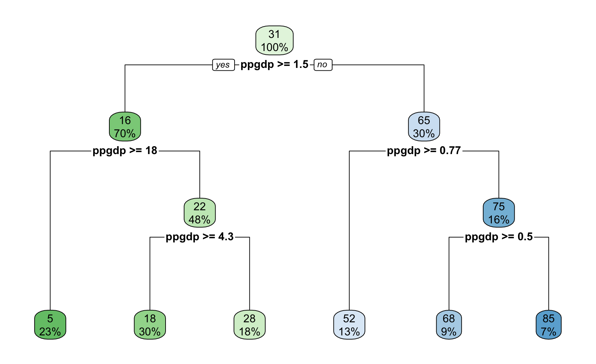
Each interior node has a rule such as \(x > c\). Follow the appropriate branch until you reach a terminal node, or leaf. Its prediction is the average infant mortality of the countries in that leaf.
Try reading one path aloud. You can describe the income ranges and predicted mortality in ordinary language, which makes this model relatively easy to communicate.
Now plot the tree’s predictions as a function.
oo <- order(countries$ppgdp)
ddf <- countries[oo, ]
plot(ddf$ppgdp, ddf$infantMortality,
col = "gray55", pch = 19, cex = 0.7,
xlab = "Per capita GDP (thousands of US$)",
ylab = "Infant mortality (per 1,000 live births)")
lines(ddf$ppgdp, predict(m_tree, ddf), col = "maroon", lwd = 3)
for (i in m_tree$splits[, 4]) {
abline(v = i, col = "orange", lty = 2)
}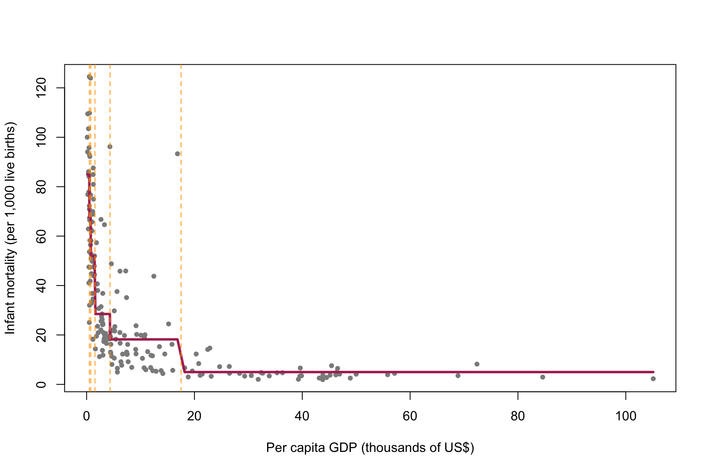
The leaves divide the predictor space into separate regions. With one feature, these are intervals marked by the dashed lines. Each interval receives the average outcome of its countries, producing the red step function. This is \(\hat{f}\): for a new country, find its interval and read the prediction.
The boundaries are close together on the left, where mortality changes quickly, and farther apart on the right. The algorithm chose these locations from the data without being told to space them this way.
3.3.2 The same data, two algorithms
Put last week’s model on the same plot to compare the predictions directly.
library(kknn)
grid <- data.frame(ppgdp = sort(countries$ppgdp))
knn_fit <- kknn(infantMortality ~ ppgdp, train = countries, test = grid,
k = 10, kernel = "rectangular")
plot(ddf$ppgdp, ddf$infantMortality,
col = "gray75", pch = 19, cex = 0.7,
xlab = "Per capita GDP (thousands of US$)",
ylab = "Infant mortality (per 1,000 live births)",
main = "Tree and KNN on the same data")
lines(grid$ppgdp, knn_fit$fitted.values, col = "navy", lwd = 2.5)
lines(ddf$ppgdp, predict(m_tree, ddf), col = "maroon", lwd = 3)
legend("topright", legend = c("Regression tree", "KNN, k = 10"),
col = c("maroon", "navy"), lwd = c(3, 2.5), box.lty = 0, cex = 0.85)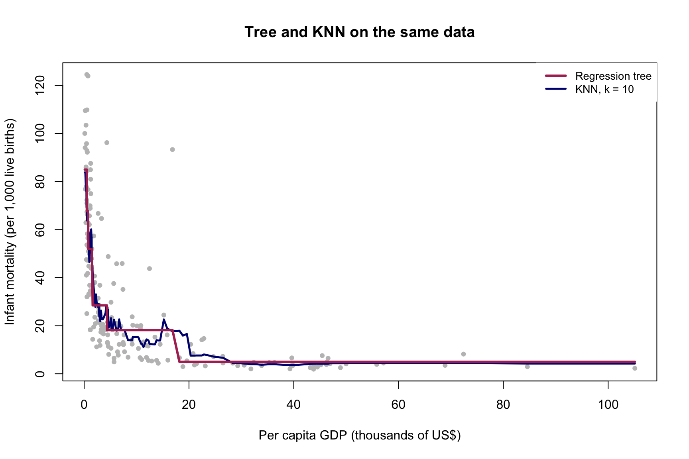
Both methods produce step functions from local averages without assuming the relationship’s shape. They differ in how they choose which countries to average.
\(K\)-nearest neighbors uses a moving window with a fixed count. Here every prediction averages ten countries, regardless of whether their incomes are close or spread across forty thousand dollars. The sparse data on the right therefore produce less comparable neighborhoods and a less stable curve.
The tree chooses boundaries first and averages within the resulting regions. These can be narrow where the outcome changes quickly and broad where it changes slowly. Its steps are coarser, but their widths depend on the splits selected from the data.
3.3.3 What the algorithm is minimizing
We divide the feature space \(X = \{x_1, x_2, \dots, x_k\}\) into smaller boxes. After choosing splits that reduce training error, we predict a new case by finding its box.
As an intuition, think of a tree as a relative of \(K\)-nearest neighbors with a changing \(k\). The neighborhood is a box rather than a fixed-count window. Its boundaries can adapt to the data. This comparison is useful for understanding the figure, though the two methods choose neighborhoods differently.
For a continuous outcome, the objective is
\[\begin{align} \min_{R_1, R_2, \dots, R_J} \sum_{j=1}^{J} \sum_{i \in R_j} (y_i - \hat{y}_{R_j})^2 \end{align}\]
Each box \(R_j\) has a mean response. We want to minimize the total squared differences between observations and their box means. Searching all possible partitions is computationally infeasible, so we use recursive partitioning:
- Search the features for the split that improves the objective most, and make that split.
- Repeat within the new boxes until a stopping rule, such as minimum size or split cost, is reached.
This is a greedy procedure. It chooses the best available split at each step without considering every possible later split. The resulting tree follows locally useful decisions, but is not guaranteed to be the best possible tree.
3.3.4 Two features, and the partition of the space
First, plot the two features together and use color to show the outcome.
ggplot(countries, aes(ppgdp, pctUrban, colour = infantMortality)) +
geom_point(size = 2)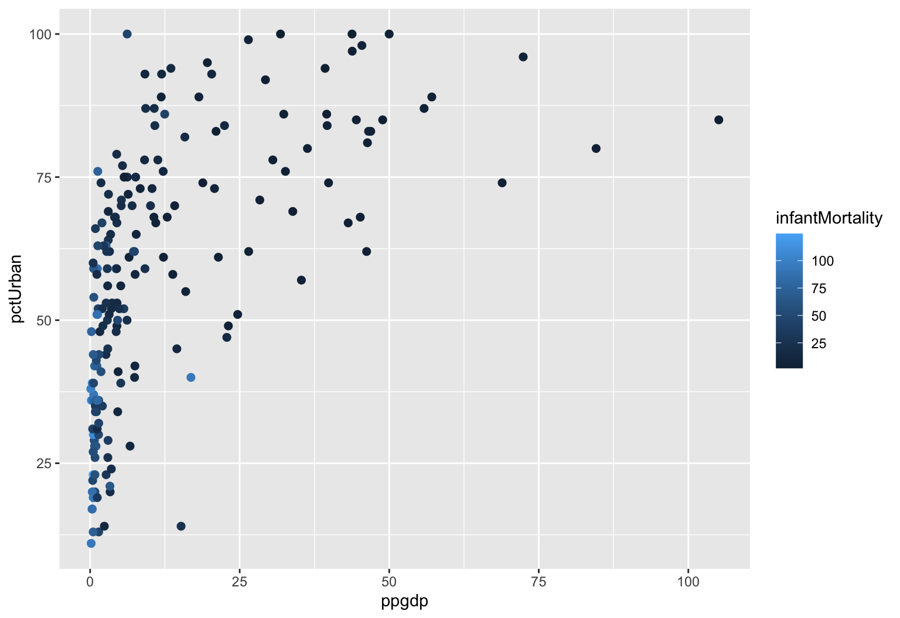
Each point is a country, located by income and urbanization. Darker points have higher mortality and gather in one corner. The tree will divide this space into rectangles.
With two features, we can still draw the resulting boxes.
t2 <- tree(infantMortality ~ ppgdp + pctUrban, data = countries,
control = tree.control(nobs = nrow(countries), mindev = 0.002))
partition.tree(t2, main = "The partition of the feature space")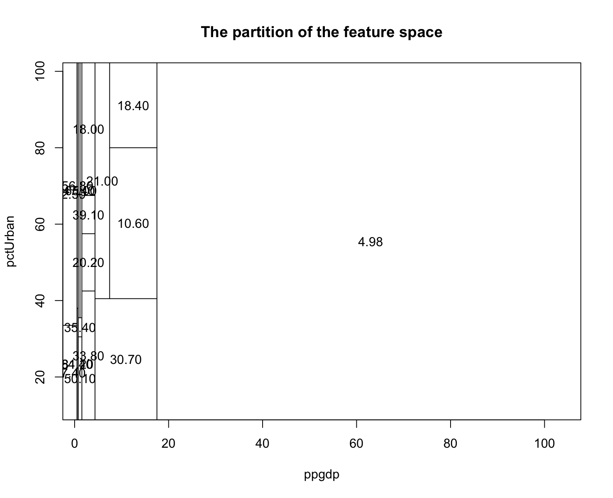
Each rectangle corresponds to a leaf, and its printed number is the prediction for countries in that rectangle. A tree divides the feature space into boxes and assigns one prediction to each.
We use mindev to let the tree grow further than the default. Income already accounts for much of the variation, and tree() otherwise stops splitting quite early.
Again, no rescaling was needed. GDP per capita and percent urban both range to roughly a hundred here, but using income in dollars would only change the axis numbers. The partition would remain identical. This differs from the distance calculation in last week’s model.
3.3.5 A categorical feature, with no dummy coding
The factor group classifies countries as OECD, African, or other. A tree can use it directly.
m_tree3 <- rpart(infantMortality ~ ppgdp + pctUrban + group, data = countries)
rpart.plot(m_tree3, box.palette = "GnBu")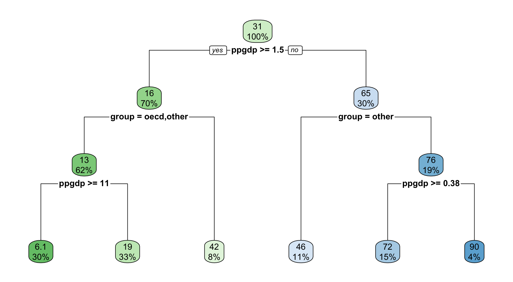
We do not need dummy variables, a reference category, or explicit interaction terms. The tree splits on group membership and prints the category names on the branches.
Check whether group appears in the tree. If it does, compare the income thresholds within the groups. Different thresholds indicate an interaction: the relationship between wealth and mortality varies by group. A linear model would need us to include an interaction term explicitly.
These examples illustrate the first two strengths listed above: handling categories and finding interactions.
3.3.6 Cost complexity, and the parameter that plays the role of k
If allowed to keep splitting, the procedure produces increasingly small, homogeneous leaves and fits the training data closely. Last week showed why we should check whether that improves prediction on new cases.
We can penalize complexity by changing the objective to
\[\begin{align} C(T, y) = L(T, y) + \alpha |T| \end{align}\]
Here \(L(T, y)\) is the loss for outcome \(y\) fitted with tree \(T\), and \(|T|\) measures the number of nodes. We want low loss, but also penalize a tree for becoming more complex. The parameter \(\alpha\) sets the strength of that penalty.
A large \(\alpha\) favors a small tree and may leave it too simple to fit the relationship. A small \(\alpha\) allows a larger tree. The role of \(\alpha\) is similar to that of \(k\) in \(K\)-nearest neighbors: like \(k\), it needs to be chosen for the prediction task.
As with last week’s parameter, we use cross-validation to guide the choice.
3.3.7 Pruning
The usual procedure is to grow a large tree, then prune it to a size supported by cross-validation. rpart carries out cross-validation during fitting, so we can inspect its table directly.
To observe the trade-off, we need a tree large enough to overfit. We set cp close to zero and let it grow until leaves contain only a few countries.
set.seed(7)
big_tree <- rpart(infantMortality ~ ppgdp + pctUrban + group,
data = countries,
control = rpart.control(cp = 0.000001, minsplit = 10,
minbucket = 5, xval = 10))
cpt <- big_tree$cptable
cat("Leaves in the grown tree:", max(cpt[, "nsplit"]) + 1, "\n")Leaves in the grown tree: 29 With roughly a hundred and eighty countries and leaves of five, the tree divides the data quite finely. It fits the training observations closely, giving us a useful case for examining overfitting and generalization.
plotcp() displays the cross-validation table, showing error across different tree sizes.
plotcp(big_tree)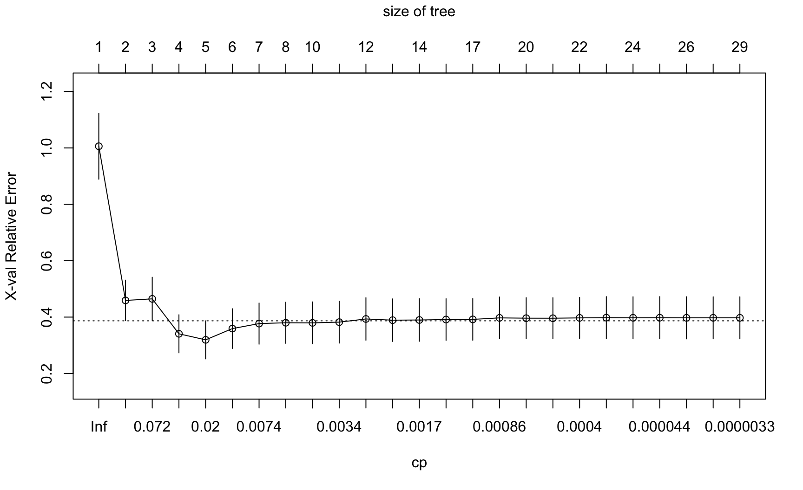
There are four things to read in this figure.
The bottom axis shows the complexity parameter on a log scale. Large values are on the left and small ones on the right. A large \(\alpha\) means a stronger penalty and a smaller tree, so complexity increases to the right, as in last week’s \(\log(1/k)\) plot.
The top axis gives the number of leaves. This expresses the same progression in units that are easier to interpret.
The vertical axis shows cross-validated error, scaled relative to a tree with no splits, which has a value of 1. A value of 0.3 means the error is seventy percent lower than predicting the same value for every country.
The vertical bars show one standard error above and below each estimate. The dotted line is one standard error above the minimum error. It supports another selection rule, which we set aside here to use the simpler minimum-error rule.
Read this like last week’s test-error curve. Additional splits initially capture useful structure. Error then levels off and rises as the tree starts fitting individual countries too closely.
3.3.7.1 Choosing where to cut
We choose the tree with the lowest cross-validated error, using the value in the table.
i_min <- which.min(cpt[, "xerror"])
cp_best <- cpt[i_min, "CP"]
cat("Lowest CV error at", cpt[i_min, "nsplit"] + 1, "leaves, cp =",
cp_best, "\n")Lowest CV error at 5 leaves, cp = 0.01229076 The bottom of this curve is usually fairly flat. Differences between neighboring trees may be smaller than the uncertainty in their error estimates. Treat the minimum as a reasonable choice; nearby trees may perform about as well.
best_tree <- prune(big_tree, cp = cp_best)
rpart.plot(best_tree, box.palette = "GnBu", main = "After pruning")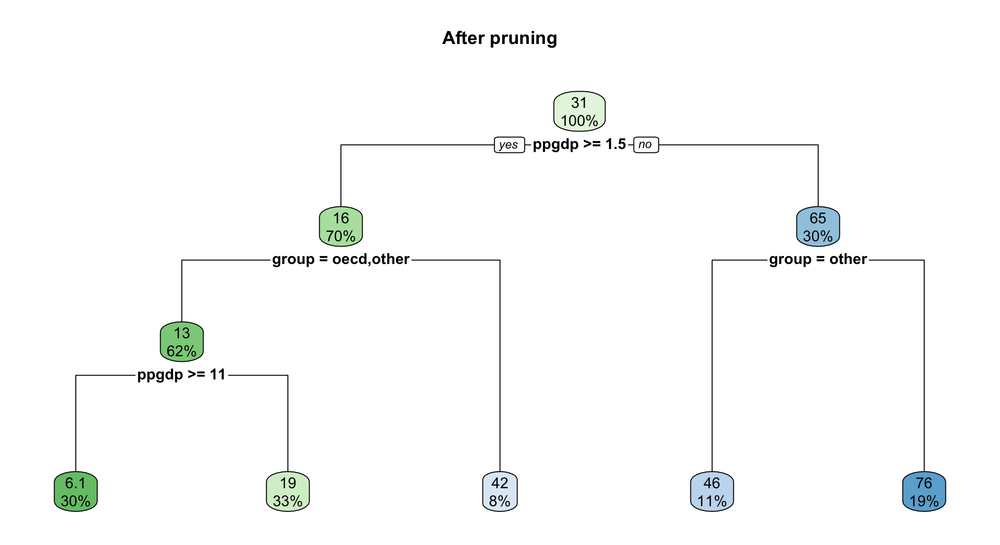
We have now fitted and pruned a regression tree. Part II changes the outcome to binary, introduces a new dataset, and moves from one row per country to country-year observations.
3.4 Part II. The same idea, on a rare binary outcome
The basic procedure carries over to onset. We use majority votes rather than outcome averages within boxes, and a measure of class mixture rather than squared error. Splitting, greediness, complexity penalties, and pruning still apply.
The important changes are the new data, the binary outcome, and especially its rarity. That rarity will shape how we fit and evaluate the model.
url <- paste0("https://raw.githubusercontent.com/babakrezaee/",
"AppliedAI-PoliSci/refs/heads/main/data/FearonLaitin2003.csv")
fl <- read.csv(url)
vars <- c("onset", "warl", "gdpenl", "lpopl1", "lmtnest", "ncontig",
"Oil", "nwstate", "instab", "polity2l", "ethfrac", "relfrac")
cw <- na.omit(fl[, vars])
cw <- cw[cw$onset %in% c(0, 1), ]
nrow(cw)[1] 6326In Fearon and Laitin’s data, onset equals 1 when a civil war begins in a country-year.
We use eight covariates from their specification rather than all eleven, to keep the tree legible on a screen. Prior war, non-contiguity, and political instability remain in cw. In the workshop, add them back to the formula and examine how the tree and its readability change.
Watch two details when preparing these data. Oil begins with a capital letter; R distinguishes it from oil. Also, onset occasionally has codes other than 0 and 1 for wars already underway when a country enters the data. We retain only the two values we intend to model.
The country-year structure needs attention. The data cover 1945–1999, so the United States appears fifty-five times. Terrain and colonial history remain the same, and income often changes little between years. Unlike Part I, the observations are repeated within countries. We cannot replace them with country averages because onset occurs in a particular year. We return to the implications at the end of the handout.
First, count how often the outcome occurs.
table(cw$onset)
0 1
6221 105 round(mean(cw$onset), 4)[1] 0.0166Civil war begins in roughly two of every hundred country-years. This low base rate is important for interpreting the model’s performance.
Consider a baseline prediction rule that needs no fitting:
Predict that no civil war will begin, anywhere, ever.
This rule is correct about ninety-eight percent of the time. Despite its high accuracy, it misses every war onset. It is therefore unhelpful for identifying the events we want to anticipate.
Keep this baseline for comparison. A more sophisticated model needs to offer something beyond it.
set.seed(7)
n <- nrow(cw)
train_id <- sample(1:n, floor(0.7 * n))
Train <- cw[train_id, ]
Test <- cw[-train_id, ]3.4.1 One tree on onset
m_stump <- rpart(factor(onset) ~ gdpenl + lpopl1 + lmtnest + Oil +
nwstate + polity2l + ethfrac + relfrac,
data = Train, method = "class",
control = rpart.control(cp = 0.004, minbucket = 25))
rpart.plot(m_stump, box.palette = "GnBu")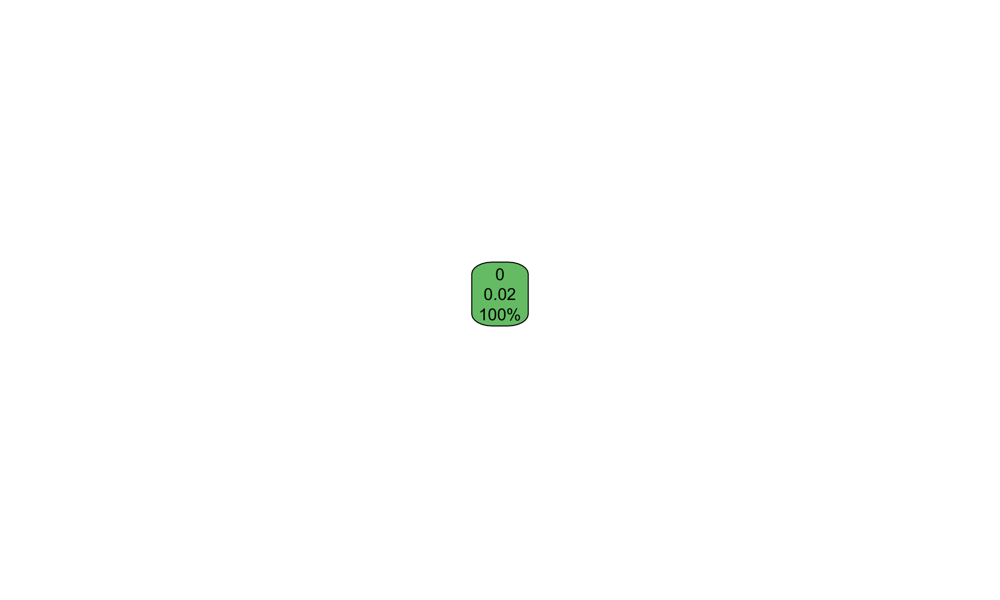
The tree has not split. It returns one node, predicts no onset for every case, and assigns a probability of 0.02, the base rate we calculated above. Before changing it, consider why this happened.
Under the fitting criterion, a split must improve classification enough to justify its cost. On this rare outcome, the available splits do not improve on predicting no war everywhere. The fitted result is therefore a tree with no splits.
The baseline is not just a difficult comparison: it is what rpart selects with this setup. The software has followed the objective we supplied, but the resulting model does not meet our substantive purpose.
3.4.1.1 Telling the algorithm that the rare class matters
One response is to give the two classes equal importance in fitting, even though they are not equally frequent.
m_class <- rpart(factor(onset) ~ gdpenl + lpopl1 + lmtnest + Oil +
nwstate + polity2l + ethfrac + relfrac,
data = Train, method = "class",
parms = list(prior = c(0.5, 0.5)),
control = rpart.control(cp = 0.002, minbucket = 20))
rpart.plot(m_class, box.palette = "GnBu")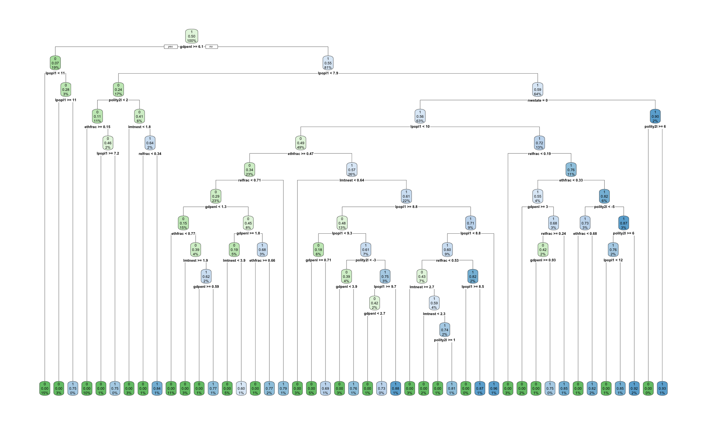
Setting prior this way asks rpart to treat onsets and non-onsets as equally frequent. Each onset then receives roughly fifty times its previous weight, making splits that distinguish wars more useful to the objective. The tree grows. We still use method = "class" and read its branches as before.
There are two points to keep in mind about this change.
First, reweighting is a substantive decision. We chose it because we consider a missed war more costly than a false alarm. The original tree was operating correctly, but our initial objective did not reflect that concern.
Second, we reweight the tree but leave the forest unweighted. This is deliberate, so that we can examine the consequences below.
3.4.2 Why one tree is not enough
A single tree can be unstable: small changes in the training data may lead to a substantially different tree.
par(mfrow = c(1, 3))
set.seed(7)
for (i in 1:3) {
draw <- Train[sample(1:nrow(Train), nrow(Train), replace = TRUE), ]
t_i <- rpart(factor(onset) ~ gdpenl + lpopl1 + lmtnest + Oil +
nwstate + polity2l + ethfrac + relfrac,
data = draw, method = "class",
parms = list(prior = c(0.5, 0.5)),
control = rpart.control(cp = 0.004, minbucket = 20))
rpart.plot(t_i, box.palette = "GnBu", main = paste("Sample", i))
}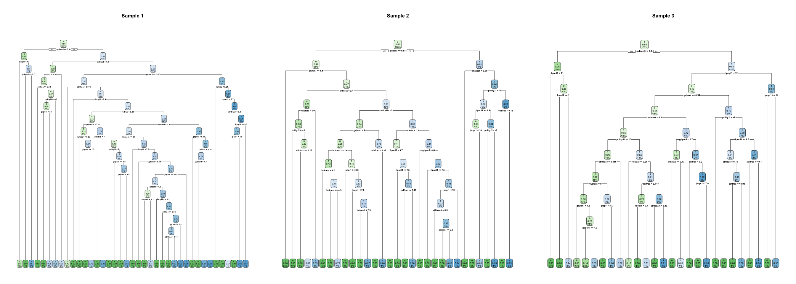
Compare the first splits in these three trees, each fitted to a sample from the same data. A different first split changes the cases reaching each branch, and therefore changes the later splits too.
This is variance, the term we introduced last week. A deep tree can represent many shapes and thus have low bias, but the shape it selects may depend heavily on the sample. Greedy splitting adds to this instability because an early decision affects all the branches below it.
Although a single tree is easy to read, its instability motivates combining several trees.
3.4.3 From bagging to random forests
Bagging, short for bootstrap aggregating, fits trees to repeated samples drawn with replacement and combines their predictions. This takes more computation than fitting one tree. Averaging reduces variation when the trees’ errors are not all the same.
Random forests add another source of randomization. At each split, a tree considers a sampled subset of \(m\) variables rather than all the features.
Suppose income is the strongest predictor. Bagged trees may repeatedly split on it, producing similar trees with correlated errors. Restricting the available features at each split makes the trees less alike. Individual trees may become worse, while their combined prediction improves because their errors are less correlated.
The aim is to combine many imperfect trees whose errors differ, rather than to find one exceptionally good tree.
Two parameters matter: \(B\), the number of bootstrapped trees, and \(m\), the number of features available at each split. A common choice is \(m = \sqrt{p}\), with \(p\) the total feature count. When \(m = p\), the procedure reduces to bagging.
3.4.4 Fitting the forest
We now change the method argument in last week’s caret setup.
Train$onset_f <- factor(ifelse(Train$onset == 1, "war", "no_war"),
levels = c("no_war", "war"))
Test$onset_f <- factor(ifelse(Test$onset == 1, "war", "no_war"),
levels = c("no_war", "war"))
set.seed(7)
rf <- train(onset_f ~ gdpenl + lpopl1 + lmtnest + Oil +
nwstate + polity2l + ethfrac + relfrac,
data = Train,
method = "rf",
ntree = 300,
trControl = trainControl(method = "cv", number = 5),
tuneGrid = data.frame(mtry = c(2, 3, 5)))
rfRandom Forest
4428 samples
8 predictor
2 classes: 'no_war', 'war'
No pre-processing
Resampling: Cross-Validated (5 fold)
Summary of sample sizes: 3543, 3542, 3542, 3543, 3542
Resampling results across tuning parameters:
mtry Accuracy Kappa
2 0.9805785 -0.003979084
3 0.9794498 -0.005356815
5 0.9789981 -0.005866209
Accuracy was used to select the optimal model using the largest value.
The final value used for the model was mtry = 2.The structure is familiar: a formula, training data, cross-validation, and a tuning grid. The new arguments are method = "rf" and the grid for mtry. We convert the outcome to a factor to request classification. Feature rescaling is unnecessary here.
We have not included class weighting or a prior argument in this call. Unlike the single tree, the forest receives no instruction to give onset extra weight. We will examine the effect of leaving it that way.
Allow a minute or two for this chunk to run.
3.4.4.1 Predicting for cases the model has never seen
After tuning, train() refits the selected model on the full training set. We can predict directly from the resulting object.
pred <- predict(rf, newdata = Test)
head(pred)[1] no_war no_war no_war no_war no_war no_war
Levels: no_war warUse rf for prediction rather than rf$finalModel. The caret object retains information about preprocessing that the underlying fitted model does not. Calling the underlying model directly can therefore bypass transformations needed for new data.
3.4.5 The accuracy trap
cm <- table(Predicted = pred, Actual = Test$onset_f)
cm Actual
Predicted no_war war
no_war 1865 30
war 3 0accuracy <- sum(diag(cm)) / sum(cm)
round(accuracy, 4)[1] 0.9826The accuracy is high. Taken on its own, it could make this model look successful.
Compare it with the baseline that always predicts no onset.
baseline <- mean(Test$onset_f == "no_war")
round(baseline, 4)[1] 0.9842The improvement over that baseline is small or absent, despite growing nine hundred trees and tuning mtry by cross-validation.
Now inspect the confusion matrix. Among the actual wars, how many did the forest predict? It identifies close to none.
The forest is operating as specified. We selected on accuracy, which gives little incentive to identify an outcome occurring in only two percent of cases.
The result resembles the initial tree with no splits. We reweighted that tree to make onset matter more, but left the forest unchanged. Read the two results together: the objective matters as well as the algorithm. caret selected mtry to maximize accuracy, even though accuracy did not adequately reflect our interest in war onset.
The output gave no warning about this mismatch. Cross-validation ran correctly and the test set was held out, yet the resulting model failed to identify the outcome we wanted to predict. Following those procedures was not enough to make the model useful.
This is the problem addressed by the second reading (Muchlinski et al. 2016). Week 6 covers precision, recall, F1, thresholds, and class weighting in more detail, including how unequal error costs affect evaluation. For now, focus on recognizing the problem.
3.4.5.1 The four cells
The table is a confusion matrix. To name its cells, we first choose the positive class. Here it is war onset; this is an analyst’s choice rather than a property of the data.
| Actually war | Actually no war | |
|---|---|---|
| Predicted war | True positive | False positive |
| Predicted no war | False negative | True negative |
A false positive flags onset in a country-year where none occurs. A false negative misses an onset that does occur. Their consequences differ, so deciding which matters more requires a political and ethical judgment. Accuracy combines them without expressing that judgment explicitly.
3.4.6 Variable importance, and what it does not mean
We cannot read a forest like an individual tree, but we can examine variable importance.
varImpPlot(rf$finalModel, main = "Variable importance")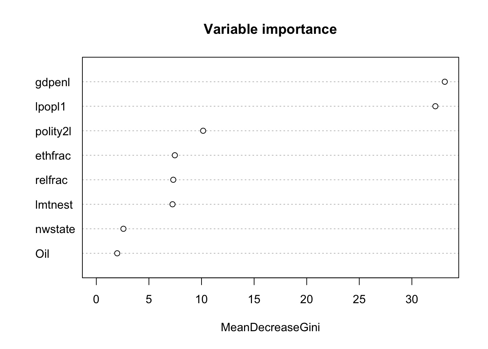
Importance measures how much the model relies on a feature. One approach totals improvements from splits using that feature; another permutes its values and measures the loss in predictive performance. A feature whose values can be shuffled without affecting performance contributes little under that measure.
Across the bootstrapped trees, useful features tend to be selected and used more often. The ranking summarizes their contribution to the fitted forest.
Interpret this plot with several limitations in mind.
Importance is not effect size. Its units do not have a direct substantive interpretation. Twice the importance does not mean twice the influence, and the values are not directly comparable across models or datasets.
Importance has no sign. A high ranking does not tell us whether income raises or lowers predicted onset risk. It also cannot distinguish a positive relationship from a negative or U-shaped one.
Correlated features can share importance. If features provide similar information, the forest may use them interchangeably, reducing the importance assigned to each. A low ranking may therefore reflect overlap rather than irrelevance. Income, population, and regime measures in these data are related, so consider that possibility here.
Impurity-based importance favors features with many distinct values. Continuous variables may rank above binary ones partly for this reason. Compare the binary features Oil and nwstate with gdpenl.
Importance does not establish causation. It describes the predictors the forest used, without estimating what would happen if we changed them.
Policy briefs and press coverage sometimes present importance rankings as the drivers of a problem. We can make a narrower claim: these features were useful for prediction in this fitted model on this dataset. Explaining causes requires additional evidence.
3.5 Prediction, forecasting, and early warning
Week 1 distinguished prediction from forecasting. So far we have predicted country-years randomly held out from the same historical period as the training data. We have not forecast future events.
The third reading describes ViEWS (Hegre et al. 2019), which issues monthly forecasts of political violence before the target months occur. This requires a different evaluation setup.
For forecasting, we need to split by time. Training on 1995 and 1999 to predict 1997 gives the model information from after the target year. Training up to a date and testing beyond it better reflects the information available when forecasting. Looking ahead can make a model appear more successful than it would be in practice.
The country-year structure introduces another issue. Sudan in 1996 is related to Sudan in 1995, so putting one in a test fold and the other in training can let closely related information cross the split. Standard cross-validation treats observations as interchangeable, which does not fit this structure. We return to the problem and possible responses in Week 6.
3.6 The politics of early warning
Forecasts are often produced to guide action. Their intended use therefore matters when assessing errors.
Flagging a country as high risk may influence investment, aid, insurance, travel advice, diplomacy, or arguments for intervention. A forecast can become part of the political situation it describes.
With an outcome occurring in two percent of cases, even good discrimination can produce many false alarms because non-events are so numerous. A country may bear the costs of being flagged even when no onset follows. We can assess that outcome only after the forecast period has passed.
Forecasts may also affect the outcome. For example, a warning might cause investment to fall, which could increase instability. The forecast could then appear more accurate partly because people acted on it. This possibility needs attention when evaluating predictions used in political decisions.
Last week we asked who defines similarity. Here we should ask who chooses the threshold for a warning. Turning forest votes into a flag on a map requires a cut point that affects false alarms and missed wars. Who selects it, how is it justified, and do those bearing the consequences have a say?
3.7 Reading
Fearon, J. D., and Laitin, D. D. 2003. “Ethnicity, Insurgency, and Civil War.” American Political Science Review 97(1): 75–90. (Fearon and Laitin 2003)
Read this article for its explanation of civil war and the specification behind our data. Its authors seek to explain onset, whereas we use the data for prediction. Keep that difference in mind as you compare their analysis with ours.
Muchlinski, D., Siroky, D., He, J., and Kocher, M. 2016. “Comparing Random Forest with Logistic Regression for Predicting Class-Imbalanced Civil War Onset Data.” Political Analysis 24(1): 87–103. (Muchlinski et al. 2016)
Focus on the treatment of rare outcomes rather than the implementation. If time permits, read the critical exchange it prompted as well. It raises useful questions about what model-performance comparisons can establish.
Hegre, H., et al. 2019. “ViEWS: A Political Violence Early-Warning System.” Journal of Peace Research 56(2): 155–174. (Hegre et al. 2019)
Read this as an account of an early-warning system in use. Pay particular attention to how the forecasts should be interpreted and who is expected to use them.
Recommended, not required.
Pinckney, J., and RezaeeDaryakenari, B. 2022. “When the Levee Breaks: A Forecasting Model of Violent and Nonviolent Dissent.” International Interactions 48(5): 997–1026. (Pinckney and RezaeeDaryakenari 2022)
This article forecasts armed and unarmed conflict at the country-year level using eight algorithms and five forecasting ensembles. Compare its ensembles with our forest: both combine predictions from models whose errors may differ. Also consider how including nonviolent mobilization changes the task, since unarmed uprisings are less rare than civil war and their measurement presents different difficulties.
3.8 Before the workshop
Install rpart, rpart.plot, tree, randomForest, and caret, and run every chunk before the workshop. Allow a minute or two for the forest.
3.9 Questions for the session
Prepare an answer to at least two questions.
Fearon and Laitin set out to explain civil war, whereas we used their variables to predict it. What did we learn that they did not, and what did they establish that our model cannot?
A single tree is easy to read but can be unstable; a forest can improve prediction while being harder to interpret. Which concern matters more for political science? Does your answer depend on the model’s purpose?
The forest deliberately makes each tree worse, by withholding features from it, in order that the ensemble should be better. Is there anything analogous in the way political institutions aggregate judgments? Committees, juries, federal structures, and multiple veto players are all admissible.
Our model achieved very high accuracy and predicted almost no wars, and every technical step was performed correctly. What does this suggest about the relationship between methodological correctness and usefulness?
Variable importance is regularly reported in policy documents as identifying the drivers of a problem. Write the one sentence you would add to such a document in order to make it honest, and state what would be lost in the process.
Who should select the threshold at which a forecast becomes a warning, and to whom should that selection be explained? Note that those bearing the cost of a false alarm and those bearing the cost of a missed war are generally not the same people.